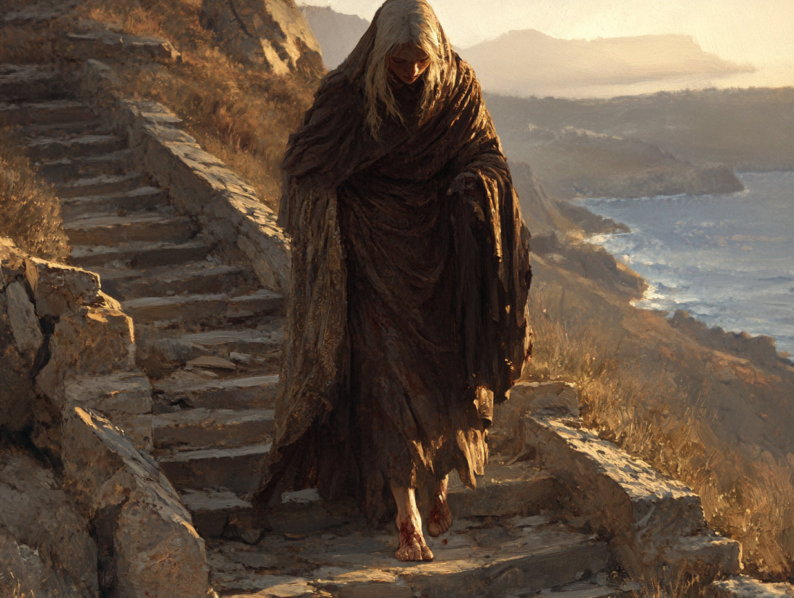

La vieille femme ferma la porte derrière elle, laissant Thaléos Portétoile à son chagrin. Le riche marchand d'Aquila venait d'apprendre qu'il avait perdu son bien le plus précieux : sa fille Nadaya.
Nadaya. Elle venait d'avoir quinze ans, toujours aimable, toujours souriante, malgré la perte de sa mère et le poids de la malédiction qui pesait sur elle. Anaïs la considérait comme sa fille, elle qui n'avait jamais pu avoir d'enfants.
La vieille femme quitta le manoir, devenu terriblement silencieux, et s'engagea sur le sentier rocailleux menant à la plage. Anaïs avait échoué. Elle n'avait pas su protéger la jeune fille. L'équilibre avait été rompu, la bête s'était libérée, et elle avait dû la tuer. Elle n'avait pas eu le choix.
Thaléos enverrait sans doute quelques assassins à la poursuite de ceux qui avaient causé la mort de sa fille. Rakos saurait sans doute trouver des personnes qualifiées pour ce genre de chose. Mais cette idée n'apaisait pas sa soif de vengeance.
Les pierres acérées du sentier blessaient ses pieds nus, mais elle ne se souciait guère de ces éraflures superficielles. La douleur qu'elle portait en elle était bien plus terrible, insupportable. Jamais elle n'accepterait que ce crime reste impuni. Briser la vie d'une jeune fille, pourquoi ? Pour quoi ? Pour un simple bijou ?
Anaïs parvint au rivage. Son regard bleu acier se porta sur l'horizon, morcelé par les silhouettes des îles de l'archipel. Elle savait ce qu'elle devait faire. Elle irait voir les Trois Sœurs, en paierait le prix, et obtiendrait sa vengeance.
Dans un mouvement fluide, Anaïs se métamorphosa en poisson et disparut dans les profondeurs silencieuses de la mer.